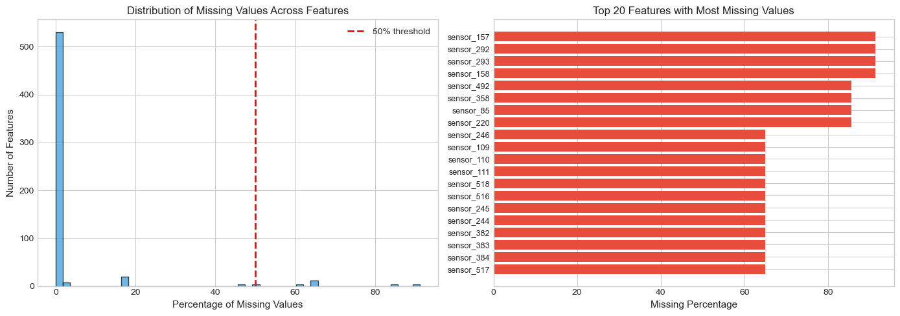
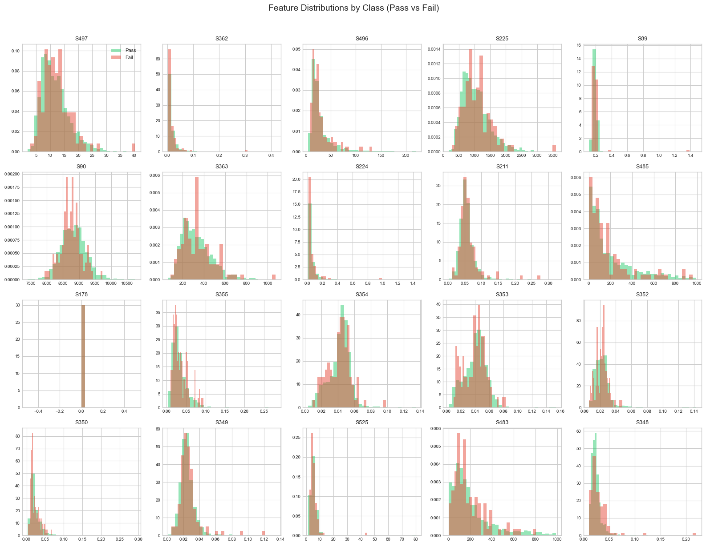

SECOM Semiconductor Manufacturing Data - Exploratory Data Analysis
Dataset Background
The SECOM dataset originates from a semiconductor fabrication facility where products undergo hundreds of sensor measurements during production. Each sample represents one production entity (e.g., a wafer or chip), and the binary label indicates whether the product passed or failed quality control.
Attribute
Value
Samples
1,567 production entities
Features
590 sensor measurements
Labels
Pass (-1) / Fail (1)
Key Questions This Analysis Addresses
How much missing data exists, and which features are most affected?
What is the class distribution (pass vs. fail)?
Which features show the strongest relationship with the outcome?
Are there redundant (highly correlated) features we can remove?
What preprocessing steps are needed before modeling?
1. Environment Setup and Data Loading
We begin by importing the necessary Python libraries and loading the dataset files. The SECOM data consists of two files: - secom.data: Contains 590 sensor measurements per sample (space-separated, NaN for missing) - secom_labels.data: Contains the pass/fail label and timestamp for each sample
# Load librariesimport warningsfrom pathlib import Pathimport matplotlib.pyplot as pltimport numpy as npimport pandas as pdimport seaborn as sns# Suppress warningswarnings.filterwarnings("ignore")# Set visualization style for consistent, publication-quality plotsplt.style.use("seaborn-v0_8-whitegrid")print("Libraries loaded successfully")
Libraries loaded successfully
DATA LOADING
secom.data - Raw sensor measurements (590 features)
secom_labels.data - Pass/Fail labels with timestamps
Labels use -1 for Pass and 1 for Fail
1 label column (pass/fail)
1 timestamp column
Total: 592 columns
# DEFINE THE PATH TO THE DATA DIRECTORYdata_dir = Path("../data/secom")# Load the sensor measurements (features)df = pd.read_csv( data_dir /"secom.data", sep=" ", header=None, na_values="NaN",)# Assign meaningful column names (sensor_0, sensor_1, ..., sensor_589)df.columns = [f"sensor_{i}"for i inrange(df.shape[1])]# Load the labels file containing pass/fail status and timestampslabels = pd.read_csv( data_dir /"secom_labels.data", sep=" ", header=None, names=["label", "timestamp"],)# Merge labels into the main dataframedf["label"] = labels["label"]# Convert timestamp strings to proper datetime objects# The strip('"') removes surrounding quotes from the timestamp stringsdf["timestamp"] = pd.to_datetime(labels["timestamp"].str.strip('"'))# Display dataset dimensionsprint("Dataset Successfully Loaded")print("="*40)print(f"Total columns: {df.shape[1]:,}")print(f" - Sensor features: {df.shape[1] -2}")print(f" - Additional columns: label, timestamp")print(f"Total rows (samples): {df.shape[0]:,}")
Dataset Successfully Loaded
========================================
Total columns: 592
- Sensor features: 590
- Additional columns: label, timestamp
Total rows (samples): 1,567
2. Data Overview
Before diving into detailed analysis, let’s get a high-level view of the data structure, including data types, memory usage, and the time period over which the data was collected.
Understanding the time range helps us: - Identify if data represents seasonal/temporal patterns - Check for time-based drift in manufacturing process - Adjust rain/test splits if needed
Data Collection Period
Start date: 2008-07-19 11:55:00
End date: 2008-10-17 06:07:00
Duration: 89 days
3. Missing Value Analysis
Missing values are common in manufacturing sensor data due to: - Sensor malfunctions or calibration issues - Data transmission errors - Certain sensors not being applicable for all product types
# Calculate both absolute counts and percentages to understand:# Which features have the most missing data# How severe the missing data problem is overallfeature_cols = [col for col in df.columns if col.startswith("sensor_")]#Count missing values for each featuremissing_counts = df[feature_cols].isnull().sum()#Calculate missing percentagemissing_pct = (missing_counts /len(df)) *100#Summary dataframe sorted by missing percentagemissing_df = pd.DataFrame({"missing_count": missing_counts,"missing_pct": missing_pct,}).sort_values("missing_pct", ascending=False)#Print summary statisticsprint("Missing Value Summary")print(f"Total sensor features: {len(feature_cols)}")print(f"Features with ANY missing: {(missing_counts >0).sum()}")print(f"Features with >50% missing: {(missing_pct >50).sum()}")print(f"Features 100% missing (useless): {(missing_pct ==100).sum()}")
Missing Value Summary
Total sensor features: 590
Features with ANY missing: 538
Features with >50% missing: 28
Features 100% missing (useless): 0
VISUALIZE MISSING VALUE DISTRIBUTION
Two plots help us understand the missing data pattern: 1. Histogram: Shows the overall distribution of missingness 2. Bar chart: Highlights the worst offending features
#Create two plots to show missing valuesfig, axes = plt.subplots(1, 2, figsize=(14, 5))# LEFT PLOT: Histogram of missing percentages across all features# This shows how many features fall into each "missingness" bucketaxes[0].hist(missing_pct, bins=50, edgecolor="black", alpha=0.7, color="#3498db")axes[0].set_xlabel("Percentage of Missing Values", fontsize=11)axes[0].set_ylabel("Number of Features", fontsize=11)axes[0].set_title("Distribution of Missing Values Across Features", fontsize=12)axes[0].axvline(x=50, color="red", linestyle="--", linewidth=2, label="50% threshold")axes[0].legend()# RIGHT PLOT: Top 20 features with highest missing percentagestop_missing = missing_df.head(20)axes[1].barh(range(len(top_missing)), top_missing["missing_pct"], color="#e74c3c")axes[1].set_yticks(range(len(top_missing)))axes[1].set_yticklabels(top_missing.index, fontsize=9)axes[1].set_xlabel("Missing Percentage", fontsize=11)axes[1].set_title("Top 20 Features with Most Missing Values", fontsize=12)axes[1].invert_yaxis() # Highest at topplt.tight_layout()plt.show()

Insight: Features with >50% missing data likely provide little value and should be candidates for removal during preprocessing.*
Why remove >50% missing data candidadtes? Reduce noise. Improve model performance. When more than 50% of the data is missing, it is better to remove the feature because it is not useful for the model.
In semiconductor manufacturing, a sensor with >50% missing data likely indicates: - Sensor malfunction - Sensor only applies to certain product types - Data transmission failures
ANALYZE MISSING VALUES PER SAMPLE
It’s also important to check if certain SAMPLES have excessive missing data, which might indicate data quality issues for those specific production runs.
Runs = Samples
Columns = Features
# Count missing features for each samplesample_missing = df[feature_cols].isnull().sum(axis=1)sample_missing_pct = (sample_missing /len(feature_cols)) *100print("Missing Values Per Sample")print(f"Average features missing per sample: {sample_missing.mean():.1f} ({sample_missing_pct.mean():.1f}%)")print(f"Minimum missing per sample: {sample_missing.min()}")print(f"Maximum missing per sample: {sample_missing.max()}")
Missing Values Per Sample
Average features missing per sample: 26.8 (4.5%)
Minimum missing per sample: 4
Maximum missing per sample: 152
Insight: Each sample has some missing values, which is typicalor sensor data. We’ll need to impute these before modeling.
4. Descriptive Statistics
Summary statistics for each feature helps identify: - Constant features: Zero variance (useless for prediction) - Scale differences: Features with vastly different ranges - Outliers: Extreme values that may need special handling
# Get pandas describe output and transpose for easier viewingstats = df[feature_cols].describe().T# Add missing percentage for referencestats["missing_pct"] = missing_pct# Add range (max - min)stats["range"] = stats["max"] - stats["min"]# Add coefficient of variation (measures relative variability)# CV = std / |mean| - useful for comparing variability across different scalesstats["cv"] = stats["std"] / stats["mean"].abs()print("Sample of Descriptive Statistics (first 10 features):")stats.head(25)
Sample of Descriptive Statistics (first 10 features):
count
mean
std
min
25%
50%
75%
max
missing_pct
range
cv
sensor_0
1561.0
3014.452896
73.621787
2743.2400
2966.260000
3011.49000
3056.650000
3356.3500
0.382897
613.1100
0.024423
sensor_1
1560.0
2495.850231
80.407705
2158.7500
2452.247500
2499.40500
2538.822500
2846.4400
0.446713
687.6900
0.032217
sensor_2
1553.0
2200.547318
29.513152
2060.6600
2181.044400
2201.06670
2218.055500
2315.2667
0.893427
254.6067
0.013412
sensor_3
1553.0
1396.376627
441.691640
0.0000
1081.875800
1285.21440
1591.223500
3715.0417
0.893427
3715.0417
0.316313
sensor_4
1553.0
4.197013
56.355540
0.6815
1.017700
1.31680
1.525700
1114.5366
0.893427
1113.8551
13.427535
sensor_5
1553.0
100.000000
0.000000
100.0000
100.000000
100.00000
100.000000
100.0000
0.893427
0.0000
0.000000
sensor_6
1553.0
101.112908
6.237214
82.1311
97.920000
101.51220
104.586700
129.2522
0.893427
47.1211
0.061686
sensor_7
1558.0
0.121822
0.008961
0.0000
0.121100
0.12240
0.123800
0.1286
0.574346
0.1286
0.073561
sensor_8
1565.0
1.462862
0.073897
1.1910
1.411200
1.46160
1.516900
1.6564
0.127632
0.4654
0.050515
sensor_9
1565.0
-0.000841
0.015116
-0.0534
-0.010800
-0.00130
0.008400
0.0749
0.127632
0.1283
17.973588
sensor_10
1565.0
0.000146
0.009302
-0.0349
-0.005600
0.00040
0.005900
0.0530
0.127632
0.0879
63.821983
sensor_11
1565.0
0.964353
0.012452
0.6554
0.958100
0.96580
0.971300
0.9848
0.127632
0.3294
0.012912
sensor_12
1565.0
199.956809
3.257276
182.0940
198.130700
199.53560
202.007100
272.0451
0.127632
89.9511
0.016290
sensor_13
1564.0
0.000000
0.000000
0.0000
0.000000
0.00000
0.000000
0.0000
0.191449
0.0000
NaN
sensor_14
1564.0
9.005371
2.796596
2.2493
7.094875
8.96700
10.861875
19.5465
0.191449
17.2972
0.310548
sensor_15
1564.0
413.086035
17.221095
333.4486
406.127400
412.21910
419.089275
824.9271
0.191449
491.4785
0.041689
sensor_16
1564.0
9.907603
2.403867
4.4696
9.567625
9.85175
10.128175
102.8677
0.191449
98.3981
0.242628
sensor_17
1564.0
0.971444
0.012062
0.5794
0.968200
0.97260
0.976800
0.9848
0.191449
0.4054
0.012417
sensor_18
1564.0
190.047354
2.781041
169.1774
188.299825
189.66420
192.189375
215.5977
0.191449
46.4203
0.014633
sensor_19
1557.0
12.481034
0.217965
9.8773
12.460000
12.49960
12.547100
12.9898
0.638162
3.1125
0.017464
sensor_20
1567.0
1.405054
0.016737
1.1797
1.396500
1.40600
1.415000
1.4534
0.000000
0.2737
0.011912
sensor_21
1565.0
-5618.393610
626.822178
-7150.2500
-5933.250000
-5523.25000
-5356.250000
0.0000
0.127632
7150.2500
0.111566
sensor_22
1565.0
2699.378435
295.498535
0.0000
2578.000000
2664.00000
2841.750000
3656.2500
0.127632
3656.2500
0.109469
sensor_23
1565.0
-3806.299734
1380.162148
-9986.7500
-4371.750000
-3820.75000
-3352.750000
2363.0000
0.127632
12349.7500
0.362599
sensor_24
1565.0
-298.598136
2902.690117
-14804.5000
-1476.000000
-78.75000
1377.250000
14106.0000
0.127632
28910.5000
9.721059
IDENTIFY PROBLEMATIC FEATURES
Constant features (std=0) carry no information and should be removed. Very low variance features are also suspicious.
# Find features with exactly zero variance (all values the same)constant_features = stats[stats["std"] ==0].index.tolist()# Find features with very low variance (std < 0.01)low_var_features = stats[stats["std"] <0.01].index.tolist()print("Problematic Features")print(f"Constant features (zero variance): {len(constant_features)}")print(f"Near-zero variance (std < 0.01): {len(low_var_features)}")
Problematic Features
Constant features (zero variance): 116
Near-zero variance (std < 0.01): 171
We should consider removing constant features because they do not provide any information to the model.
Essentially if STD = 0 then the feature is constant and does not provide any information to the model because the feature is identical.
Variance near 0 is also a sign of constant features:
High variance → Feature changes → Could explain differences in outcome
Zero variance → Feature never changes → Cannot explain anything
5. Class Imbalance Analysis
In manufacturing quality control, defect rates are typically low (most products pass). This creates a class imbalance problem where the minority class (failures) is underrepresented. If not addressed, machine learning models may: - Predict “pass” for everything and achieve high accuracy - Fail to detect actual defects (which is the whole point!)
Class Distribution
Pass (-1): 1,463 samples (93.4%)
Fail (1): 104 samples (6.6%)
Imbalance ratio: 14.1:1
Class Imbalance Visualization
Visual representation helps understand the severity of the imbalance problem.
# Two Plotsfig, axes = plt.subplots(1, 2, figsize=(12, 4))# Define colors: green for pass, red for failcolors = ["#2ecc71", "#e74c3c"]labels_text = ["Pass (-1)", "Fail (1)"]# LEFT: Bar chart showing absolute countsaxes[0].bar(labels_text, [label_counts[-1], label_counts[1]], color=colors, edgecolor="black")axes[0].set_ylabel("Number of Samples", fontsize=11)axes[0].set_title("Class Distribution (Counts)", fontsize=12)# Add count labels on top of barsfor i, v inenumerate([label_counts[-1], label_counts[1]]): axes[0].text(i, v +20, str(v), ha="center", fontweight="bold")# RIGHT: Pie chart showing proportionsaxes[1].pie( [label_counts[-1], label_counts[1]], labels=labels_text, autopct="%1.1f%%", colors=colors, explode=(0, 0.1), # Emphasize the minority class startangle=90, textprops={'fontsize': 11})axes[1].set_title("Class Proportion", fontsize=12)plt.tight_layout()plt.show()
6. Feature Distribution Analysis
Comparing feature distributions between pass and fail samples helps identify: - Discriminative features: Features that differ between classes - Distribution shapes: Normal, skewed, bimodal, etc. - Overlap: How separable the classes are in feature space
We focus on features with low missing values (<5%) to get reliable distribution estimates.
# Get features with less than 5% missing datalow_missing_features = missing_df[missing_df["missing_pct"] <5].index.tolist()[:20]print(f"Analyzing {len(low_missing_features)} features with <5% missing values")
Analyzing 20 features with <5% missing values
# plot features with low missing valuesfig, axes = plt.subplots(4, 5, figsize=(16, 12))axes = axes.flatten()for i, feature inenumerate(low_missing_features): ax = axes[i]# Plot overlapping histograms for each classfor label_val, color, label_name in [(-1, "#2ecc71", "Pass"), (1, "#e74c3c", "Fail")]: data = df[df["label"] == label_val][feature].dropna() ax.hist(data, bins=30, alpha=0.5, color=color, label=label_name, density=True)# Use shortened names for readability ax.set_title(feature.replace("sensor_", "S"), fontsize=9) ax.tick_params(labelsize=7)# Add legend to first subplot onlyaxes[0].legend(fontsize=8)plt.suptitle("Feature Distributions by Class (Pass vs Fail)", fontsize=14, y=1.02)plt.tight_layout()plt.show()print("Look for features where the red and green distributions differ significantly - these are potentially predictive features.")

Look for features where the red and green distributions differ significantly - these are potentially predictive features.
7. Correlation Analysis
Correlation analysis serves two purposes: 1. Feature-to-feature correlation: Identify redundant features that measure the same thing 2. Feature-to-label correlation: Find features most associated with the outcome
We use features with <10% missing to ensure reliable correlations. Limiting to 50 features keeps the heatmap readable.
# Select features for correlation analysisanalysis_features = missing_df[missing_df["missing_pct"] <10].index.tolist()[:50]# Compute Pearson correlation matrixcorr_matrix = df[analysis_features].corr()print(f"Computing correlations for {len(analysis_features)} features")print(f"Correlation matrix shape: {corr_matrix.shape}")
Computing correlations for 50 features
Correlation matrix shape: (50, 50)
Insight: Blocks of red/blue indicate groups of correlated features. These could be reduced using PCA or by removing redundant features.
#High Correlation pairs# Find all pairs with correlation > 0.9high_corr_pairs = []for i inrange(len(corr_matrix.columns)):for j inrange(i +1, len(corr_matrix.columns)): corr_val = corr_matrix.iloc[i, j]ifabs(corr_val) >0.9: high_corr_pairs.append({"feature_1": corr_matrix.columns[i],"feature_2": corr_matrix.columns[j],"correlation": corr_val, })# Create dataframe of highly correlated pairshigh_corr_df = pd.DataFrame(high_corr_pairs).sort_values("correlation", ascending=False)print(f"Found {len(high_corr_df)} highly correlated pairs (|r| > 0.9)")print("\nTop 10 most correlated pairs:")high_corr_df.head(10)
Found 15 highly correlated pairs (|r| > 0.9)
Top 10 most correlated pairs:
feature_1
feature_2
correlation
11
sensor_525
sensor_253
0.999362
2
sensor_362
sensor_224
0.995710
13
sensor_351
sensor_213
0.995094
9
sensor_350
sensor_212
0.993534
0
sensor_497
sensor_225
0.993071
4
sensor_211
sensor_349
0.988676
5
sensor_355
sensor_217
0.987291
14
sensor_391
sensor_253
0.987185
10
sensor_525
sensor_391
0.986747
8
sensor_352
sensor_214
0.979281
CORRELATION WITH TARGET LABEL
The most important correlations are with the target (pass/fail). Features with high absolute correlation are likely predictive.
# Calculate correlation of each feature with the labellabel_corr = df[feature_cols].corrwith(df["label"]).dropna()# Sort by absolute correlation valuelabel_corr = label_corr.sort_values(key=abs, ascending=False)print("Top 10 Features Most Correlated with Pass/Fail Label:")for feat, corr in label_corr.head(10).items(): direction ="↑ (higher = more fails)"if corr >0else"↓ (higher = more passes)"print(f" {feat}: r = {corr:+.4f}{direction}")
Top 10 Features Most Correlated with Pass/Fail Label:
sensor_59: r = +0.1558 ↑ (higher = more fails)
sensor_103: r = +0.1512 ↑ (higher = more fails)
sensor_510: r = +0.1316 ↑ (higher = more fails)
sensor_348: r = +0.1302 ↑ (higher = more fails)
sensor_158: r = +0.1213 ↑ (higher = more fails)
sensor_431: r = +0.1209 ↑ (higher = more fails)
sensor_293: r = +0.1145 ↑ (higher = more fails)
sensor_111: r = -0.1139 ↓ (higher = more passes)
sensor_434: r = +0.1121 ↑ (higher = more fails)
sensor_430: r = +0.1101 ↑ (higher = more fails)
VISUALIZE TOP CORRELATED FEATURES WITH LABEL
top_corr_features = label_corr.head(10).index.tolist()fig, ax = plt.subplots(figsize=(10, 6))# Color by direction: red for positive, blue for negativecolors = ["#e74c3c"if x >0else"#3498db"for x in label_corr.head(10).values]ax.barh(range(10), label_corr.head(10).values, color=colors)ax.set_yticks(range(10))ax.set_yticklabels(top_corr_features)ax.set_xlabel("Correlation with Label (Fail=1)", fontsize=11)ax.set_title("Top 10 Features Correlated with Pass/Fail Outcome", fontsize=12)ax.axvline(x=0, color="black", linewidth=0.5)ax.invert_yaxis()plt.tight_layout()plt.show()print("Insight: Red bars = higher values predict FAILURE.Blue bars = higher values predict PASS")
Outliers in sensor data may represent: - Genuine anomalies: Unusual but valid measurements - Sensor errors: Malfunctions or calibration issues
- Data entry errors: Mistakes during data collection
We use the Interquartile Range (IQR) method to identify outliers.
# Function to count outliers using IQR methoddef count_outliers_iqr(series):""" Count the number of outliers in a pandas Series using IQR method. Parameters: series: pandas Series of numeric values Returns: int: Number of outlier values """ q1 = series.quantile(0.25) q3 = series.quantile(0.75) iqr = q3 - q1 lower_bound = q1 -1.5* iqr upper_bound = q3 +1.5* iqrreturn ((series < lower_bound) | (series > upper_bound)).sum()# Count outliers for each feature with low missing valuesoutlier_counts = {}for col in low_missing_features: outlier_counts[col] = count_outliers_iqr(df[col].dropna())# Create summary dataframeoutlier_df = pd.DataFrame({"outlier_count": outlier_counts.values(),"outlier_pct": [c /len(df) *100for c in outlier_counts.values()],}, index=outlier_counts.keys()).sort_values("outlier_pct", ascending=False)print("Outlier Analysis Summary")print(f"Average outlier percentage: {outlier_df['outlier_pct'].mean():.1f}%")print(f"Max outlier percentage: {outlier_df['outlier_pct'].max():.1f}%")print("\nFeatures with most outliers:")outlier_df.head(10)
Outlier Analysis Summary
Average outlier percentage: 4.4%
Max outlier percentage: 10.5%
Features with most outliers:
outlier_count
outlier_pct
sensor_362
165
10.529675
sensor_224
153
9.763880
sensor_496
149
9.508615
sensor_483
122
7.785578
sensor_485
104
6.636886
sensor_348
100
6.381621
sensor_211
77
4.913848
sensor_349
72
4.594767
sensor_355
72
4.594767
sensor_350
67
4.275686
BOX PLOTS FOR FEATURES WITH MOST OUTLIERS
Box plots show the distribution and outliers by class, helping us see if outliers are associated with failures.
top_outlier_features = outlier_df.head(8).index.tolist()fig, axes = plt.subplots(2, 4, figsize=(16, 8))axes = axes.flatten()for i, feature inenumerate(top_outlier_features): ax = axes[i] df.boxplot(column=feature, by="label", ax=ax) ax.set_title(feature, fontsize=10) ax.set_xlabel("Label (-1=Pass, 1=Fail)") ax.set_ylabel("Value")plt.suptitle("Box Plots: Features with Most Outliers (by Class)", fontsize=14, y=1.02)plt.tight_layout()plt.show()print("Insight: Outliers that appear only in one class may be important predictive signals rather than errors.")
Insight: Outliers that appear only in one class may be important predictive signals rather than errors.
9. Key Findings Summary
SECOM EDA - KEY FINDINGS REPORT
DATASET OVERVIEW • Total samples: 1,567 • Sensor features: 590 • Data collection period: 89 days
MISSING VALUES • Features with missing data: 538 (91.2%) • Features with >50% missing: 28 • Avg missing per sample: 27 features → ACTION: Impute or remove features with >50% missing
CLASS IMBALANCE • Pass samples: 1,463 (93.4%) • Fail samples: 104 (6.6%) • Imbalance ratio: 14.1:1 → ACTION: Use SMOTE, class weights, or stratified sampling
TOP PREDICTIVE FEATURES • Best correlated with outcome: sensor_59 Correlation: r = 0.1558 → These features should be prioritized in modeling
10. Preprocessing Recommendations
Based on this exploratory analysis, the following preprocessing pipeline is recommended before building predictive models:
Step 1: Handle Missing Values
Action
Criteria
Rationale
Remove features
>50% missing
Too much missing data to impute reliably
Impute remaining
<50% missing
Use median imputation (robust to outliers)
Step 2: Feature Selection
Remove constant features (zero variance) - provide no information
Address multicollinearity - remove one of each highly correlated pair (|r| > 0.95)
Consider PCA for dimensionality reduction
Step 3: Handle Class Imbalance
Choose one or more approaches: - SMOTE (Synthetic Minority Over-sampling Technique) - Class weights in model training (e.g., class_weight='balanced') - Stratified sampling for train/test splits
Step 4: Outlier Treatment
Use RobustScaler instead of StandardScaler (less sensitive to outliers)
Investigate outliers that appear only in failure samples (potential predictive signals)
Step 5: Feature Scaling
Standardize all features before modeling (sensors have different scales)
This is essential for distance-based algorithms (KNN, SVM) and neural networks